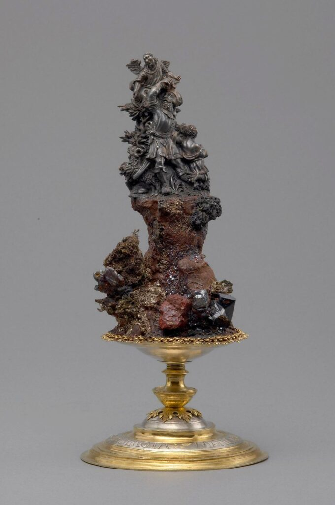

Caspar Ulich, Handstein mit dem Opfer Abrahams, St. Joachimsthal, 1563 datiert, Silbererzstufe, verschiedene Mineralien, Silber, vergoldet, 19,8 cm × 9 cm, bezeichnet MENS IMMOTA MANET 15 AB 63 und ABRAHAM IÖRGER, Kunsthistorisches Museum Wien, Kunstkammer, Inv. Nr. Kunstkammer, 4142
“Mens Immota Manet”: Assaying Faith in the Early Modern Ore Mountains
The Kunsthistorisches Museum in Vienna houses a curious composite object of raw minerals and fine goldsmith work that was created within the cultural context of mining and minting. Today, it sits comfortably among similar pieces that are referred to as Handsteine (Abb.).1 The word Handstein is a complex period term, which verbatim translates to hand- or palm (sized) stone (lapides manuals), but often refers more broadly to mineral specimens of particular monetary value or aesthetic appeal in written sources of the fifteenth and sixteenth centuries.2 These compositions would have been greatly appealing to the eyes of the mineral connoisseur and collector, inviting them to turn the object around and admire the sculptural skill of both man and nature from all angles.

Handsteine can be raw minerals or more elaborate compositions which incorporate other materials, as can be seen in this example. Other times, mineral ore and precious materials are combined with figurines or small edifices, bringing together scenes of mining with historic narratives, be they classical myth, religious exegesis, or contemporary early modern history. Taken together, these objects often speak to the desire of understanding the processes of mineral and metallic formation occurring beneath the earth’s surface.3 As objects of knowledge, Handsteine could become powerful tools of contemplating the self in relation to the secrets of nature and God’s workings within this world. Moreover, Handsteine provide insight into the complex and nuanced understanding of practical alchemy within mining cultures and alchemy’s potential as an allegory of the transformative and refining processes of the macrocosm.
This Handstein is unusual for the rich contextual information that can be reconstructed based on its inscriptions, iconography and collecting history. It came to Vienna by way of the Kunst-and Wunderkammer at Ambras Castle in Tyrol, the famous collection amassed by the Habsburg prince Archduke Ferdinand II of Tyrol (1529-1595). A knowledgeable connoisseur of ore specimen and other minerals, the Archduke had high aesthetical standards and an extensive collection of Handsteine that forms the backbone of the Vienna displays today.4 In an inventory of 1596, compiled at the archduke’s death, the present object can be identified with the following description:
Then a small handstaindl made from acanthine, on it the story of Abraham wanting to sacrifice his son etc., all figures cut, stands on a silver and gilded foot.5
The inscriptions on the object, however, complicate a straightforward attribution of Ferdinand as the Handstein’s commissioning patron or even initial recipient. The heraldic shield of the Jörger von Tollet, an Austrian noble family, sculpted into the figurative scene along with a name plate inscribed with ABRAHAM IORGER point towards the involvement of Abraham Jörger von Tollet (1533-1573). A successful Habsburg courtier, Jörger advised the archduke’s father Emperor Ferdinand I (1503-1564) on financial matters. Of particular relevance in the present context is Jörger’s involvement in imperial efforts to reform royal mines and mints in Bohemia. It is unclear how exactly Ferdinand came to possess this Handstein. Without other historical sources, scholarship has previously speculated that Jörger might have presented the archduke with the Handstein to mark Ferdinand becoming sovereign of Tyrol in 1563.6 As acting governor of Bohemia, it is very likely that Ferdinand had close contact with Jörger, as the archduke was tasked by his father to oversee the mining reforms Jörger was advising on.7 Although a personal connection between Jörger and the Habsburgs likely explains how the Handstein ended up in the Ambras collection, the motivation behind the work’s commission requires further interrogation.8
The present catalogue essay offers a re-examination of the circumstances in which this object came into being, based on a previously untapped textual source elaborating on Jörger’s biographical information. Insights from this source will be presented alongside a close visual analysis and the historical and cultural context of Joachimsthal (Jáchymov), the site of the object’s creation. This allows for the Handstein’s iconographical detail and its inscriptions to sit together much more comfortably. The object is given new dimensions of meaning and significance as an important historical witness of personal devotion as well as the blurred confessional divides in the Holy Roman Empire. Beyond this, the present analysis speaks to the poetical potential of metallic imaginaries through a convergence of material and moral epistemologies. Assaying as a process of material refinement serves as metaphor for the testing of Jörger’s faith in light of personal tragedy.
Both scripture and biblical exegesis make numerous allusions to silver, not least as the word of God, that is probed by clerics, a process that illuminates it and makes it shine.9 This is also linked to an understanding of alchemy as Probierkunst and the practical process of extracting noble metals from ore.10 Recent scholarship on the cultural implications of mining has identified such motives as hope, fortune, and risk, commonly encountered in the context of geological economies and subterranean space, as key tropes permeating early modern societies and their moral values.11 Success in mining enterprises was thought to be subject not to serendipity but divine providence, with ore and minerals seen as God-given treasures and expressions of his will. In this, the first-hand experience and visual characterisation of minerals and raw metals crucially informed knowledge of both metallic genesis and metallurgy as well as providence. Interesting pieces of ore and other minerals were thus traditionally offered by miners to princely sovereigns as a sign of divine benevolence.
With its intricately worked base of gilded silver mouldings, the goldsmith presents the scene unfolding on the shimmering peak above on a literal silver platter. Alongside its glittering materiality, the object seeks our attention as a precious moral jewel that is worthy of close consideration and even meditative contemplation. Built up around a core of plaster, the lower portion of the rocky landscape incorporates an array of glittering minerals, ores and native silver into an artful composition. Though created artificially by the artist’s hand, the cliffs of the mineral rockscape show nature’s creative powers at its best. Various forms, colours and textures are woven together into a dazzlingly variegated tapestry of the subterranean garden of God’s creation. The raw geological specimens are arranged to build materially to the narrative climax presented at the composition’s peak. The figurative rockscape materialises the moment Abraham proves his faith in God, as described in Genesis 22: 1-19. As the object is turned, or rather as the visitor moves around the object in today’s setting, different characters and details of the scene come into view.12 We see Abraham’s son Isaac, down on one knee, hands folded in prayer. At his back stands the patriarch, his body tense with anticipation, one hand placed on the neck of his son while the other arm is raised above his head, ready to strike the fatal blow. However, this narrative path is abruptly interrupted by divine intervention. Abraham’s face is turned upwards past his right shoulder towards the angel, who calls out Abraham’s name, thus averting Isaac’s sacrifice.13 In the present depiction, the angel actually pulls back Abraham’s swinging sword, before further guiding the patriarch’s gaze in the direction of a ram caught in the thicket of the rocky landscape, thus presenting an alternative narrative route to the demanded sacrifice.
Moving around the object to view it from yet another angle, the Handstein’s reverse reveals the plaque with Jörger’s name and his family’s heraldic shield. Seeing the kneeling figure from this angle alongside the prominent display of heraldry, we might start to see Isaac’s figure with new eyes. The man’s position is remarkably reminiscent of that usually taken by devout patrons in religious works of art, suggesting that it might in fact be Jörger himself we are looking at here. Jörger seems to have felt a particular connection with the Old Testament patriarch with whom he shared his given name. This is not least evidenced by the way that, seen from this angle, Abraham’s hand materialises disembodied from the shrubbery. Distanced by space and time, there still exists a bond between the two Abrahams, that, like a reassuringly placed hand on Jörger’s shoulder, gives him strength and allows him to aspire to the example of unwavering faith set by the patriarch.
This desire seems to also be expressed in an inscription on the foot of this Handstein that reads MENS IMMOTA MANET 15 AB 63. Taken from the Aeneid, the phrase translates to ‘the mind stays unmoved’ and was widely used as a proverb in the sixteenth century.14 So much so, that Joannes Sambucus (1531-1584), a historiographer and physician at the Viennese court, included it as an emblem in his influential Emblemata (1564).15 The full passage of the emblem is revealing, for the way that metallic metaphor and religious topoi are brought together:
One says that the Magnet moves iron through its internal power and hence continuously directs sailors the way. For it always looks securely [without wavering] at the pole star. In this way it shows the hours and warns us in various ways. If only our mind remained directed to heaven unmoved and would not suddenly waver at fickle misfortunes. Let your flock finally be assembled and united by peace, Christ, and let the conflict be ended by the work of your word. Give that our thirsty soul will long for the lofty strongholds, like the panting hart longs for the water of the rising source.16
It would be reductionistic to take the Sambucus’s emblem as a linear explanation for the phrase’s meaning in the context of the Handstein. However, the contemporary recognition of the metallic as poetic matter in the intellectual and courtly contexts and tastes is significant. Just as the mysterious powers of the magnet could provide the ambiguity to explore confessional conflict and a desire for peace, it could serve to imagine faith as the (divine) force that moved away Abraham’s sword (Latin ferrum, literally iron), from Isaac’s neck.17 The prominent display of the year surrounding the Latin “AB”, or “since”, urges us to ask what exactly happened in 1563 that would warrant the creation of the Handstein as a memento of keeping faith.
Key episodes of Jörger’s life as well as his learning are illuminated by a rare surviving personal Calendarium Historicum.18 First published in 1550 by Paul Ebers (1511-1569), a Lutheran theologian, the Calendarium organised important biblical and historical events as well as biographical dates of famous individuals according to the days of the year.19 Crucially, the printed editions left enough space for the owner to add their own important life events. This is precisely what Jörger did with his first edition copy. Noting down personal milestones and those of his close family in the Calendarium allows Jörger to place his own life in relation to history. Beyond the specific biographical information that can be gleamed from Jörger’s Calendarium, it is in itself a testimony to his intellectual and confessional background, that was shaped by Protestant Humanism, especially the Wittenberg circle surrounding Martin Luther in which Paul Ebers was a prominent figure.20 Jörger spent five years being schooled in Wittenberg at Luther’s house with George Major (1502-1574), Professor of Theology in Wittenberg, leading the boy’s education.21 All of Jörger’s entries are composed in Latin. Classical quotes and proverbs in Latin and one in ancient Greek further evidence his humanist learning and the extent to which it shaped his identity. They speak to the metaphorical significance of the calendar as a visualisation of the parallelisms of time and also to Jörger’s taste for poetics that would have made Vergil’s verse on the Handstein similarly meaningful.
Jörger’s entries in the Calendarium allow for the Handstein to be read as a highly personal memorandum of the turning point that 1563 represented in his life. What comes to light is a story of personal fortunes gained and lost, of the desire to keep faith as well as the hope for salvation. The year started off with a personal high point, when on January 3, Jörger married Barbara von Breuner (born 1544), the daughter of Phillip von Breuner (1500-1556), a late member of the emperor’s privy council and president of the Hofkammer, the imperial financial chamber.22 This was an advantageous match on both sides. The Jörger family had enjoyed long-standing favour among Habsburg rulers as economic advisors in their own right. Meanwhile, Jörger’s position at the Bohemian court, where he had been made chamberlain for Silesia in 1562, would have been further solidified by such a union.23 The union also found favour with the emperor, who together with his youngest son Archduke Charles, presented the couple with a gilded silver drinking vessel and a chain of gold, after Barbara’s mother, Elisabeth von Windischgrätz, had written to the monarch inviting him to the wedding.24
Later that year, in August, Jörger arrived in the imperial silver mining hub of Joachimsthal as part of a royal delegation.25 Situated in the Bohemian part of the Ore Mountains, Joachimsthal had risen to one of the most prolific silver mining centres by the mid-sixteenth century. With its growing population and wealth, Joachimsthal had attracted a number of fine craftsmen, scholars and clergy, turning it into a progressive humanist and cultural centre that was closely intertwined with the everyday realities of mining, refining metals and minting.26 It was in the context of this town, for instance, that Georg Agricola composed the De re metallica (1556). Substantially shaped by the doctor’s first-hand experience of treating the miners of Joachimsthal and living in this flourishing community, the work heralded a new age of metallurgical understanding and mining administration throughout the empire and beyond.
Tasked with the inspection of the royal mines and mint at Joachimsthal, the delegation was meant to report on areas that held the potential to benefit from mining and minting reform.27 This enterprise marked Jörger as a highly trusted courtier and speaks of his professional success, for the business of mining was of vital importance to the imperial and royal purse. Strengthening royal presence and agency in the valley had played a key role in the crown’s efforts to generate income from the rich ore finds in the local area, especially silver. At the same time, these changes were meant to re-establish the crown’s power over the Bohemian estates and local nobility against the backdrop of the confessional conflicts of the mid-sixteenth century.28 The defeat of the Schmalkaldic League in 1547 presented a turning point in this endeavour, leading to Emperor Ferdinand I claiming back mining and minting rights in Joachimsthal from the local Protestant lords, the Counts of Schlick. Having cemented his hegemony in Joachimsthal throughout the late 1540s, Ferdinand I now sought to maximise revenues through administrative reforms. In many ways, Jörger was ideally placed for the task at hand. Not only does Jörger seem to have had administrative experience, but he could at the same time boost a family tradition of Habsburg loyalty while also being a well-connected Protestant with personal links to many of Luther’s followers.
While Jörger spent the rest of the year assessing the administrative structures in Joachimsthal, he suffered severe personal losses. In the Calendarium Jörger notes how on November 13, his pregnant wife passed away along with their child:
Barbara, the legitimate daughter of master Philip von Breuner and Elisabeth von Windischgrätz, my beloved wife, died in childbirth along with her newborn, in the house of her mother at Castle Staatz, while I was away on the emperor’s orders, eleven months after our wedding in 1563.29
Moreover, only a month later, Jörger would mourn the loss of his “most darling” mother.30 The Handstein with the Sacrifice of Abraham seems to have been created to commemorate these personal losses Jörger experienced, serving the Lutheran Jörger as a tool to focus his contemplation and personal devotion in a time that likely tested his faith. He might even have wished to express his trust in God’s benevolence and hope in the salvation of his unborn child’s soul.
The Handstein can convincingly be attributed to Caspar Ulich (d. 1576), a particularly successful Joachimsthal goldsmith.31 In a letter to his brother Maximilian in 1565, Archduke Ferdinand writes how the Joachimsthal master was the only one who had really mastered the art of creating Handsteine, yet as a consequence, he also overestimated the value of his work, asking for very high prices.32 Ulich also worked as a punchcutter and medalist to uphold the quality of minted coin at the Joachimsthal mint, which was producing the vastly popular and lucrative Joachimstaler.33 It is possible that Jörger met Ulich in this capacity while examining the mint and its administration. Ulich had intimate practical knowledge of silver minerals and their metallurgy, incorporating various mineralogical stages of silver in his works. He created delicate medals from acanthite (Glaserz), a malleable silver sulphide from which silver could be extracted.34 It was also the preferred medium for the figurative parts of Ulich’s Handsteine, like in the top portion of the present example. Though the exact process of working acanthite remains an understudied area today, not least due to the objects’ fragility, the material softness of acanthite would have allowed it to be easily manipulated.35 Another silver-rich mineral that Ulich used in the Handstein under discussion is proustite (Rotgüldigerz). Admired for its brilliant bloodred colour, it conjured visions of sacrificial blood and was thus particularly suited for Handstein compositions seeking to draw out the theological significance of metalogenesis.36
The discussion of the formation of metals in terms of divine creation is a central element of the work of the reformist pastor Johannes Mathesius (1504-1565). Another formative figure in the Joachimsthal community, minerals, ores and metals played an integral role in his preaching. Having come into contact with mining at an early age, Mathesius’s knowledge of minerals and ores was both practical and philosophical. He is known to have collected minerals and even held shares of the local silver mines.37 Mathesius’s Sarepta oder Bergpostill (1562), a collection of sermons, gives an idea of how he based his theological examples in the every-day epistemological framework experienced by the local mining and minting community. This allowed Mathesius to introduce ontological complexity and nuance to the exegesis of biblical stories and the divine in his preaching, that yet remained understandable, even relatable, to the local populace. Significantly, for the present context, Mathesius was a close confidant of Luther and the inner Wittenberg circle with whom Mathesius stood in regular correspondence.38 In 1556, for instance, Mathesius sends a piece of loadstone to Paul Ebers, who we will remember as the publisher of the Calendarium.39 It is very probable that with their shared social circles and beliefs, Mathesius and Jörger would have engaged on a more personal level. Besides, it is even possible that Jörger knew Mathesius before he came to Joachimsthal as their respective visits to Wittenberg could have overlapped, for instance in 1542.40
Similar to other sixteenth-century authors, Mathesius considers a primary substance (prima materia) to be the starting point for all metals. What is quite remarkable, however, is the way he turns to historical and theological arguments to explain the impulse for processes of transformation and transmutation under the earth’s surface.41 Like an alchemist in his laboratory, God is believed to cause the formation of metals by virtue of his creative power, the soil becoming his fertile and generative ur-furnace.42 Even if both Agricola and Mathesius were sceptical of the artificial transmutation of metals by the hands of men, they acknowledge some practical advances in metallurgy made by self-proclaimed alchemists.43 Yet, Mathesius’s materialised conceptualisation of spiritual refinement through metallic metaphor and the allegory of metalogenesis draws on fundamentally alchemical ideas of material transmutation as a processes of ennobling.44 Perhaps, then, Jörger turned to the reformist pastor during this testing period of his life and found meaning in the processes of God’s subterranean garden.
Stella Wisgrill (2022)
Literatur
Objekt im Online-Katalog des KHM Wien
Primary Sources
Boeheim, Wendelin. ‘Urkunden und Regesten aus der k. k. Hofbibliothek’. In Jahrbuch der Kunsthistorischen Sammlungen des allerhöchsten Kaiserhauses, edited by Ferdinand Graf zu Trauttmansdorff-Weinsberg, 7: XCI–CCCXIII. Vienna: Adolf Holzhausen, 1888.
Ebers, Paul, and Abraham Jörger. Hs.-94: Calendarivm Historicvm [contains Familien-Notizen des Adelsgeschlechtes der Jörger]. Witebergae: Excvsvm in Officina Hæredvm Georgii Rhav, 1550. https://digi.landesbibliothek.at/viewer/image/AC09829410/1/.
Mathesius, Johannes. SAREPTA Oder Bergpostill Sampt der Jochimßthalischen Kurtzen Chroniken: Chronica der Freyen Bergkstadt in S. Jochimßthal, Vom XVI. Jar an, Biß Zu Ende Des LXI. Jars. Sampt Einer Außlegung Des CXXXIII. Psalms. Nuremberg: Johann von Berg & Ulrich Neuber, 1562. https://mdz-nbn-resolving.de/details:bsb10144078.
Secondary Sources
Asmussen, Tina. ‘Glück Auf! Fortuna und Risiko im frühneuzeitlichen Bergbau’. Edited by Maike Christadler and Eva Brugger. FKW, Zeitschrift für Geschlechterforschung und visuelle Kultur, Riskante Versprechen – Erfolg und Scheitern in der Vormoderne, 60 (2016): 30-41.
———. ‘Wild Men in Braunschweig – Economies of Hope and Fear in Early Modern Mining’. Renaissance Studies, Cultural Histories of Mining in Early Modern Europe, 34, no. 1 (2020): 31-56.
Asmussen, Tina, and Pamela O. Long. ‘Introduction: The Cultural and Material Worlds of Mining in Early Modern Europe’. Renaissance Studies 34, no. 1 (February 2020): 8-30.
Bubryák, Orsolya. ‘Kunstkammer in Schrift und Bild. Johann Septimius Jörgers (1594-1676) “Kunststube” in Nürnberg’. Acta Historiae Artium, 2019, 161-84.
Distelberger, Rudolf. ‘Gold und Silber, Edelsteine und Elfenbein’. In Renaissance in Böhmen: Geschichte, Wissenschaft, Architektur, Plastik, Malerei, Kunsthandwerk, edited by Ferdinand Seibt, 255–87. Munich: Prestel-Velag, 1985.
Dym, Warren Alexander. ‘Alchemy and Mining: Metallogenesis and Prospecting in Early Mining Books’. Ambix 55, no. 3 (2008): 232-54.
Hasse, Hans-Peter. ‘Paul Ebers Calendarium Historicum (1550)’. In Paul Eber (1511-1569): Humanist und Theologe der zweiten Generation der Wittenberger Reformation, edited by Daniel Gehrt and Volker Leppin, 288-319. Evangelische Verlagsanstalt, 2014.
Haug, Henrike. ‘Artificial Interventions in the Natural Form of Things: Shared Metallogenetical Concepts of Goldsmiths and Alchemists’. In Laboratories of Art: Alchemy and Art Technology from Antiquity to the 18th Century, edited by Sven Dupré, 2014th ed., 79-103. Archimedes, New Studies in the History and Philosophy of Science and Technology 37. Cham: Springer International Publishing, 2014.
———. ‘In the Garden of Eden? Mineral Lore and Preaching in the Erzgebirge’. Renaissance Studies 34, no. 1 (2020): 57-77.
Hirn, Joseph. Erzherzog Ferdinand II. von Tirol: Geschichte seiner Regierung und seiner Länder. Vol. 1. Innsbruck: Verlag der Wagner’schen Universitäts-Buchhandlung, 1885.
Hylla, Alexandra. ‘Himmlisches Erz – Silberschmiedekunst des 16. Jahrhunderts’. Der Anschnitt 70, no. 3-4 (2018): 119-38.
Kessler, Herbert L. ‘The Eloquence of Silver: More on the Allegorization of Matter’. In Allégorie Dans l’art Du Moyen Âge, 49-64. Turnhout: Brepols, 2011.
Kirchweger, Franz. ‘X. 31 Handstein mit dem Opfer Abrahams’. In Kasier Ferdinand I (1503-1564): Das Werden der Habsburgermonarchie, edited by Wilfried Seipel, 543. Vienna: Kunsthistorisches Museum, 2003.
Loesche, Georg. Johannes Mathesius: ein Lebens- und Sitten-Bild aus der Reformationszeit. Gotha: Perthens, 1895.
Majer, Jiři. ‘Die Habsburger und der Böhmische Bergbau des 16. Jahrhunderts’. In Bergbauüberlieferungen und Bergbauprobleme in Österreich und seinem Umkreis: Festschrift für Franz Kirnbauer, edited by Gerhard Heilfurth and Leopold Schmidt, 131-39. Veröffentlichungen des Österreichischen Museums für Volkskunde, XVI. Vienna: Österreichisches Museums für Volkskunde, 1975.
Majer, Jiři. ‘Ore Mining and the Town of St. Joachimsthal/Jáchymov at the Time of Georgius Agricola’. GeoJournal 32, no. 2 (1994): 91-99.
Meller/Reichenberger/Wunderlich 2016.
Sander, Christoph. Magnes: Der Magnetstein und der Magnetismus in den Wissenschaften der Frühen Neuzeit. Leiden: Brill, 2020.
Slotta, Rainer, Christoph Bartels, and Martin Lochert, eds. Meisterwerke bergbaulicher Kunst vom 13. bis 19. Jahrhundert. Veröffentlichungen aus dem Deutschen Bergbau-Museum Bochum 48. Bochum: Bergbau-Museum, 1990.
Sternberg, Kaspar. Umrisse einer Geschichte der Böhmischen Bergwerke. Vol. 1. Prague: Gottlieb Haase Söhne, 1836.
Storczer, Stephan G. ‘Die Handsteinsammlung des Kunsthistorischen Museums in Wien’. Master Thesis, University of Vienna, 1992.
Strieder, Peter. ‘Erzstufe’. In Reallexikon zur Deutschen Kunstgeschichte, 5:1408–17. RDK Labor, 1967. http://www.rdklabor.de/wiki/Erzstufe.
Visser, Arnoud. Joannes Sambucus and the Learned Image: The Use of the Emblem in Late-Renaissance Humanism. Brill’s Studies in Intellectual History, v. 128. Leiden: Brill, 2005.
Wagner 2019.
Wilflingseder, Franz. ‘Familiengeschitliche Aufzeichnungen der Jörger aus dem 16. und 17. Jahrhundert’. In Mitteilungen des Oberösterreichischen Landesarchivs, 3:337–52. Graz: Hermann Böhlaus, 1954.
Wißgrill, Franz Karl. Schauplatz des landsässigen Nieder-Oesterreichischen Adels vom Herren- und Ritterstande von dem XI. Jahrhundert an, bis auf die jetzigen Zeiten. Vol. 1. Vienna: Franz Seizer, 1794.
Wurzbach, Constantin. ‘Jörger’. In Biographisches Lexikon des Kaisertums Österreich, 227-33. 10. Graz: Universitätsbibliothek Graz, 1863.
- A comprehensive catalogue raisonné of the Handsteine held at the Kunsthistorisches Museum in Vienna, the largest surviving collection of these objects, is given in the unpublished thesis by Storczer 1992. See also, Distelberger 1985, S. 255-87.[↩]
- Strieder 1967, Sp. 1408-1417; http://www.rdklabor.de/wiki/Erzstufe[↩]
- Haug 2014, S. 79-103 and Smith 2017, S. 371-92.[↩]
- For an overview see Slotta et. al. 1990, S. 562-576.[↩]
- Mer ain clains handstaindl von glaszärzt, darauf ist die histori vom Abraham, wie er seinen son Isac aufopfern will etc., alles von fügurn geschniten, steet auf ainem silber und vergulten füeszl. In Boeheim 1888, S. CCLXXXV. Translation Stella Wisgrill.[↩]
- Storczer 1992. Though Archduke Ferdinand would only move to Innsbruck in 1567, the imperial diet had already confirmed Emperor Ferdinand’s wish to split Habsburg possessions between his three sons in 1563. See Hirn 1885, S. 54-56.[↩]
- It was in fact with the Archduke and his brother Maximilian, that the Joachimsthal delegation discussed their findings in 1564. See discussion below and Sternberg 1836, S. 379-80.[↩]
- Archduke Ferdinand was particularly admiring of Handsteine created in Joachimsthal. In a letter to his brother Maximilian, Ferdinand writes in 1565, that the Joachimsthal goldsmiths were the only ones who had really mastered the art of creating Handsteine. Slotta et. al. 1990, S. 564.[↩]
- For instance, Psalm 12:6 The words of the Lord are pure words, like silver refined in a furnace on the ground, purified seven times. See also, Kessler 2011, 49-64.[↩]
- For an articulation of this overlap and the mythoalchemical aspects of painting see for instance Wagner 2019, 221-54.[↩]
- See especially the work of Tina Asmussen, for example Asmussen 2016, S. 30-41; Asmussen 2020, S. 31-56; and Asmussen and O. Long 2020, S. 8-30.[↩]
- The reader is encouraged to look through the photographs of the object’s different angles on the website of the Kunsthistorisches Museum: www.khm.at/de/object/fce1242173/[↩]
- Genesis 22: 11.[↩]
- Vergil, Aeneid, 4.449.[↩]
- The social circles of the Hungarian humanist and Jörger certainly overlapped. On Sambucus see, Visser 2005, S. 12-32.[↩]
- Dicitur interna vi Magnes ferra movere: /Perpetuò nautas dirigere inque viam. /Semper enim stellam firmè aspicit ille polarem. / Indicat hac horas, nos varieque monet. /Mens utinam in caelum nobis immota maneret,
/Nec subito dubiis fluctuet illa malis. /Pax coëat tandem, Christe, unum claudat ovile, /Lisque tui verbi iam dirimatur ope. /Da, sitiens anima excelsas sic appetat arces: /Fontis ut ortivi cervus anhelus aquas. Johannes Sambucus, Emblemata, Antwerpen: Christopher Plantin 1564, S. 84. Translation from https://www.emblems.arts.gla.ac.uk/french/emblem.php?id=FSAb059.[↩] - Perhaps Jörger found one more facet of meaning in this. Similarly, to his given name Abraham connecting him to the patriarch, his family name Jörger von Tollet could be interpreted as the Latin third-person singular future of tollō, tollet, which translates to “it will be lifted” in the sense of a physical pull or giving direction.[↩]
- Jörger’s Calendarium is now kept at the State Library of Upper Austria (Hs.-94): https://digi.landesbibliothek.at/viewer/image/AC09829410/1/ . See also Wilflingseder 1954, S. 337-52.[↩]
- Hasse 2014, S. 288-319.[↩]
- On alchemy in the Wittenberg circle see for instance, Meller, Reichenberg and Wunderlich (2016), S. 195-204.[↩]
- Calendarium S. 423 and 254: “Ego Abraham Iorger ueni Vitebergam, traditus mihi a reuerendo patre Do: Marti: Luthero praeceptor Theologiae Doctor Greogius Maior et in aedibus Lutheri deposui cornua, absolutus a beanio ab ipso D: Doctore Martino Luthero 1542”.[↩]
- Wißgrill 1794, S. 80-81.[↩]
- Wilflingseder 1954, S. 337-52. Jörger’s later professional achievements might initially seem surprising, given the strong Catholic tenor generally associated with the Habsburg courts. This is, however, relativised by Jörger’s geographical sphere of action, the very specific confessional climate of the 1560s and not least by the long-standing favour that his family held among Habsburg princes. On the Jörger von Tollet see Wurzbach 1863, S. 227-233 and Bubryák 2019, S. 161-184.[↩]
- Wißgrill 1794, S. 81. See also Heiratsbrief zwischen Abraham Jörger und Elisabeth Windischgrätz at the Haus-, Hof- und Staatsarchiv, Grafenegg, Sch. 139, 1563.[↩]
- Calendarium, S. 80.[↩]
- Majer 1994, S. 93; Haug 2014, S. 79-103 and Haug 2020, S. 57-77.[↩]
- Sternberg 1836, S. 378-80.[↩]
- Majer 1975, S. 131-37.[↩]
- Calendarium, S. 382 for November 12: Barbara D: Philippi Breyner et Elisabethae a Windischgraetz filia legittima, uxor mea charissima, in Castro Staetz Austriae apud matrem suam, dum ego in commissione Caesarea abessem, 11 post nuptias mense vicina partui, una cum partu, moritur anno 1563.
Jörger would go on to marry a second time in 1566, though he never seems to have had any more children, not least leading to the bequeathing of the Calendarium to his nephew who continued to chronicle the fates of the Jörger family. See Calendarium, S. 264 for July 23, that mentions the wedding to Margarethe, the daughter of Caspar Pusch and Margarethe von Kotwitz and widow of Gottfried von Kantiz.[↩]
- Calendarium, S. 414 for December 13: Barbara Iörgerin, ex familia Baronum Harroch orta, mater mea charissima in catsro Pernstain superioris Austriae hora secunda po(st) meridiana moritur 1563. See also Calendarium, S. 245 for July 4: […] matre mea amantissima […].[↩]
- For attribution see Kirchweger 2003, S. 543; on Caspar Ulich see Haug 2014, S. 91-93 and Hylla 2018, S. 128-29.[↩]
- Slotta and Lochert 1990, 564.[↩]
- Majer 1994, S. 91-99.[↩]
- Hylla 2018, S. 127-32.[↩]
- I would like to thank Dr Paulus Rainer, Curator at the Kunsthistorisches Museum, for answering my questions and for his comments on the confusion within the literature about whether acanthite was cut or casted. Close visual examination of the acanthite portions of the museum’s Handsteine does not suggest that they were casted.[↩]
- Hylla 2018, S. 122-24.[↩]
- Majer 1994, S. 91-99; Haug 2014, S. 79-103 and Haug 2020, S. 57-77.[↩]
- See Loesche 1895, S. 92-131.[↩]
- Sander 2020, S. 35.[↩]
- Haug 2020, S. 61 and Calendarium, S. 245.[↩]
- Haug 2020, S. 68. On the theological interpretation of metallic matter, see Kessler 2011, S. 49-64.[↩]
- Dym 2008, S. 242-44.[↩]
- Dym 2008, S. 232-44.[↩]
- On the processes of material ennobling of early modern making and its alchemical imaginaries, see Wagner 2019, S. 224-30.[↩]